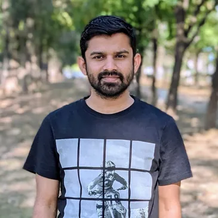

Dr. Rajat Choudhary
Biography & Overview
Dr. Rajat Choudhary specializes in Water Resources Engineering, hydroclimatology, and land-atmosphere interactions. His academic focus lies in uncovering how large-scale climate variability and atmospheric moisture transport dictate regional extreme precipitation regimes and catastrophic flood dynamics across Indian river basins.
He completed his Ph.D. at the Indian Institute of Technology Delhi (IIT Delhi), an M.S. by Research from IIT Palakkad (with coursework at IIT Madras), and his undergraduate degree in Civil Engineering from NIT Hamirpur.
Research Focus & Areas
Current investigations center around process-based simulation, atmospheric tracking, and climate adaptation frameworks:
- Atmospheric Moisture Transport & Vapor Flux
- Hydrological Extremes & Extreme Floods
- SWAT & Distributed Hydrological Modeling
- Land Surface Processes & Soil Moisture Feedback
- Climate Change Impact Assessment
Educational Background
| Degree | Institution | Duration |
|---|---|---|
| Ph.D. in Water Resources Engineering | Indian Institute of Technology (IIT) Delhi | 2020 – 2025 |
| M.S. (Research) in Water Resources | Indian Institute of Technology (IIT) Palakkad | 2018 – 2020 |
| Semester Exchange Program | Indian Institute of Technology (IIT) Madras | 2018 – 2018 |
| B.Tech in Civil Engineering | National Institute of Technology (NIT) Hamirpur | 2013 – 2017 |
Selected Publications
- Choudhary, R.,& Dhanya, C. T. (2026). Associated influence of moisture sources and catchment drivers on the flood mechanism of a tropical basin. Journal of Hydrology, 672, 135363. https://doi.org/10.1016/j.jhydrol.2026.135363
- Choudhary, R.,Dhanya, C. T., Gosain, A. K., & Chander, S. (2025). Deciphering the changes in spatio-temporal characteristics of flood events across India. Hydrological Sciences Journal, 70(14), 2498-2512. https://doi.org/10.1080/02626667.2025.2551133. Featured Article.
- Rajat & Athira, P. (2021). Calibration of hydrological models considering process interdependence: a case study of SWAT model. Environmental Modelling & Software, 144, 105131. https://doi.org/10.1016/j.envsoft.2021.105131
- Choudhary, R., & Athira, P. (2021). Effect of root zone soil moisture on the SWAT model simulation of surface and subsurface hydrological fluxes. Environmental Earth Sciences, 80(18), 620. https://doi.org/10.1007/s12665-021-09912-z
- Banad, S., Choudhary, R., Wei, Y., Patil, R. J., & Dhanya, C. T. (2026). Effects of climate change on ecologically sensitive flows in the Goulburn River Basin, Australia. Hydrological Processes, 40(8), e70666. https://doi.org/10.1002/hyp.70666.
Field Observations & Conferences

Ganga basin hydrological data collection campaign (2024).

Research presentation at the International Water Resources Conference (2023).

Soil moisture sensor deployment during pilot study in Kerala (2022).